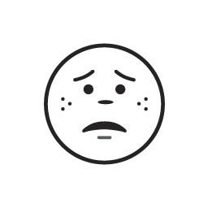

Client Context
A digital cultural institution offering virtual exhibitions and interactive learning experiences sought to better understand its competitive landscape. With growing interest in online cultural content, the organization aimed to assess how similar platforms were engaging audiences, structuring offerings, and positioning their brands.
 Objective
Objective
The organization aimed to refresh its website design to better serve as a central access point for its growing collection of learning resources and virtual exhibitions. While the site currently hosted only one exhibition, the goal was to lay the groundwork for future expansions and improve the overall user experience, engagement, and discoverability of its content.